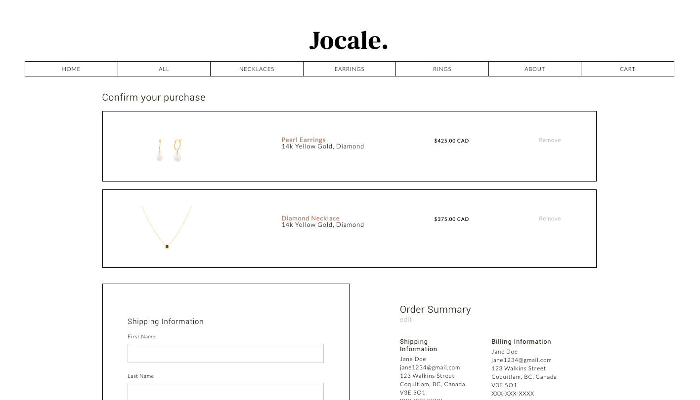
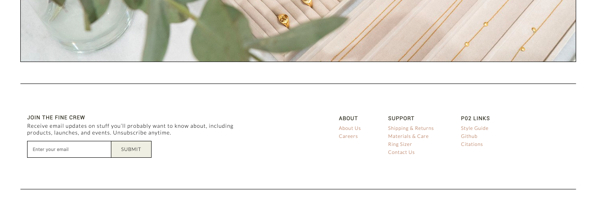
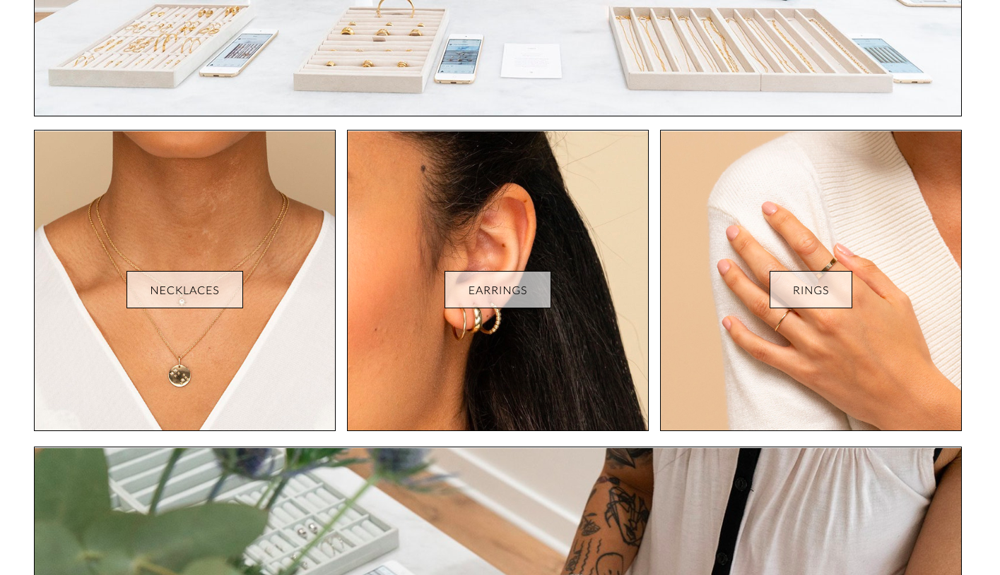
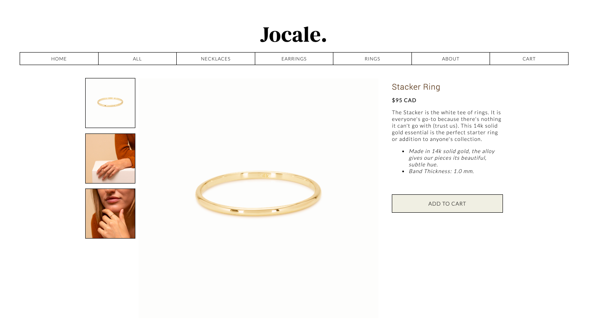
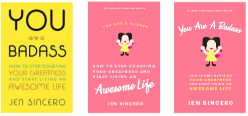
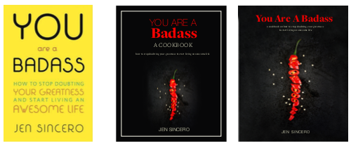
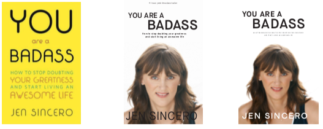
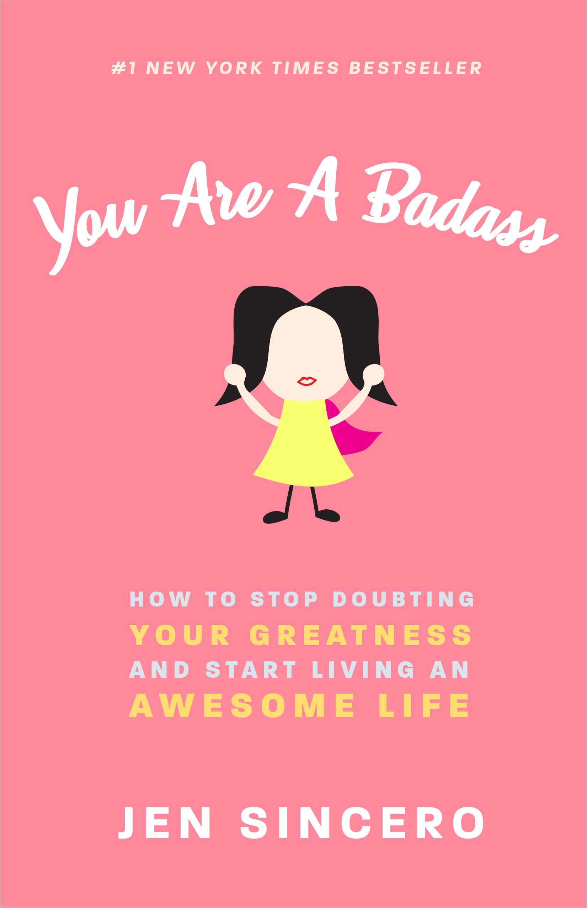

Site Content & Branding
Biography:
My name is Clare Maglanoc and I am a 3rd year visual designer studying Interactive Arts and Technology with a minor in Print and Publishing. My areas of interest are creative direction, branding and graphic design with the hopes that I can express my vision in projects that reflect my passions and values in life.
Process Analysis:
1. Company Website Mockup
Beginning - Why
In my Web Design & Development Course, a partner and I were tasked to create a website for a company of our choice. With inspiration and content from Mejuri, a canadian jewelry company, my partner and I designed and coded HTML and CSS an identity, branding guidelines, and a full mock website called "Jocale". We had shared responsibilities, but my primary role was coding the interface that my partner and I designed.
The major skills involved in this projects were branding, front end development, and web design.
Middle - Process
Styleguide and Visual Identity
My partner and I wanted to work with jewelry because we both loved jewelry from Mejuri. In addition, we both liked the way the products were shot, and paired well with the visual identity that we wanted for our brand.
Web Design and Development
Upon designing brand guidelines and gathering content, my partner and I designed interfaces for how we wanted our website to look like. *photo of drafts
My partner and I had shared responsibility in coding the website, but I was responsible for the coding the grid and layout aspect of the wesbite. Attached are some pages that I coded. *photo of drafts
   End - Results
Overall, this project allowed me not only to exercise my ability to create a branding identity, but I also learned how to code in ways that enhanced the user's experience and made it clear for them to be able to use the website.
This project challenged by coding skills in which I learned better ways to write code efficiently and effectively.
Click here for the final result
2. 3-in-1 Genre Book Covers
Beginning - Why
In my book design class for my print and publishing course, I was tasked to redesign the cover of a book in three other genres of my choosing. In my case, I chose to work with the book called “You Are A Badass: How to Stop Doubting Your Greatness and Start Living an Awesome Life” written by Jen Sincero which of self-help and motivational genre, and I redesigned it as Romantic Comedy novel, a Cookbook, and an autobiography.
Middle - Process
Research & Design Application
My first cover is a romantic comedy in which I chose to do because the in some parts of the book, the tone is of humorous and cliche nature. Based on my research, a common colour scheme amongst romantic-comedy books are on the lighter side. They often have bright or pastel shades of colours such as red, pink, blue, and yellow which is why I tried to incorporate the same concept. In terms of typeface, romantic comedy books also have some sort of decorative type on the page, in combination with some type of sans serif. Lastly for imagery, there is often some style of illustration on the cover, so I drew a female with a cape to represent the heroic sense of self that the book promotes to readers.
My second cover is a cookbook which is far from the original genre, but I chose to do this because the book provides steps to the readers, similarly as a cookbook would. Based on my research, cookbooks often have an image of real food on the cover which hints at what the cookbook is about. In my case, I chose to use a chili as a metaphor for the book’s message. Furthermore, the book encourages readers to go out of their comfort zone and is a reward- ing feeling once accomplished, just as it takes will to be able to tolerate spicy food. Most cookbooks mix a combination of serif and sans-serif on the cover, so I did that in my version as well, using different weights and colour to establish hierarchy.
My third cover is an autobiography which was in theme with the overall nature of the book; the author speaks in first person and shares her personal experiences alongside giving advice to readers. Most autobiographies have a portrait of the subject on the cover, with big emphasis on the subject’s name and title of the autobiography. In my case, I placed Jen Sincero on the cover with efforts of emphasizing her name and the autobiography title as “You Are a Badass”. While older autobiographies often had serifs, newer autobiographies primarily use a sans serif so I did the same with mine, using it in colours that complement the image.
End - Results
Overall, this project allowed me to exercise my graphic design skills and challenged my acility to emulate a visual identity. I learned how to design based on the context given, and express my take on these genres.

Color Palette:
#000000 (black)
#fffff (white)
#052E22 (forest green)
#589659 (light green)
#b4876e (royal blue)